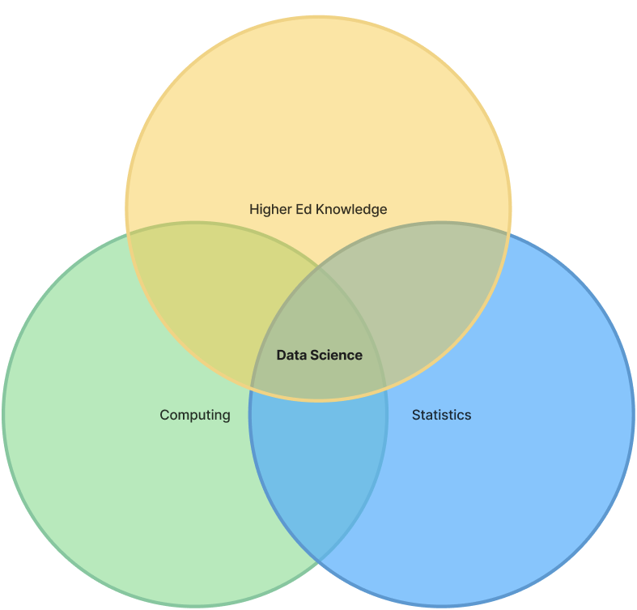
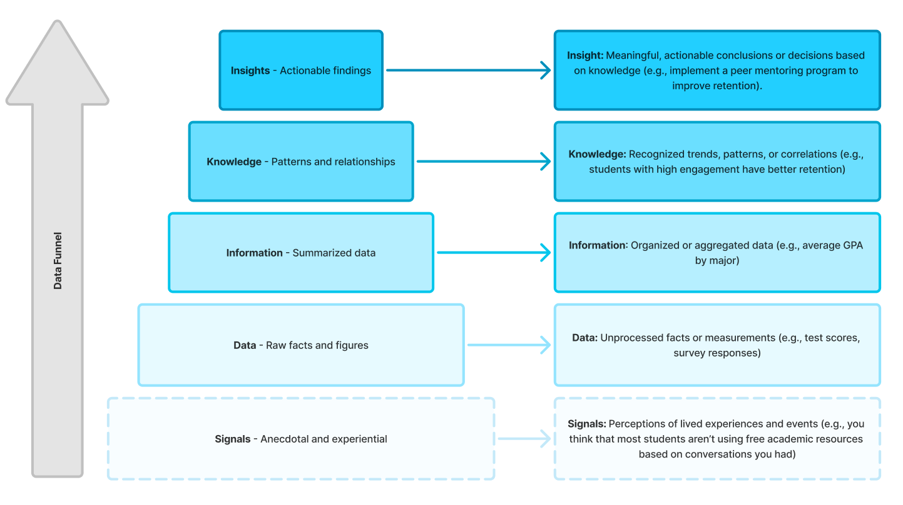

1 Data Science Explained
1.1 What is higher education?
Higher education (HE) is overall a very challenging thing to define. As a succinct description, the UNESCO (2026) definition is widely accepted and is paraphrased as the teaching and learning that occurs at institutions beyond secondary education. For HE professional striving to become more proficient with data, a university could be considered a sum of many parts, where each has its own functions, goals, stakeholders, and relevant data. Seen in the table here are some details about the possible structural levels of a university.
| Level | Leader | Example Data | Example Concern |
|---|---|---|---|
| Institution | President / Board | Enrollment totals, budget, IPEDS | Will overall enrollment totals be sustainable next semester? |
| Division / Administrative Unit | Provost / Vice Presidents | Retention, research funds, staffing | Which colleges need retention support? |
| College | Dean | Credit hours, graduation rates, faculty course loads | Which degree programs graduate the most students in four years? |
| Department | Chair | Course grades, Course completion rates, majors offered | Which courses can be offered more frequently to meet demand? |
| Program | Program Director | Student matriculation, program outcomes | Are first generation students struggling with specific courses? |
| Support Offices | Director | Applications, financial aid, IT tickets, alumni gifts | Do we have enough available financial aid for rural student applicants? |
1.2 What are data?
Data are recorded observations about the world (Witte & Witte, 2017). Examples could include numeric student survey data for the assessment of a course, qualitative narrative posts on a learning management system’s discussion board, or pictures of cats. Data can be encountered—like campus weather patterns. It can also be constructed—like with end-of-course feedback surveys.
1.3 What is science?
Science is a knowledge system that is positioned in the experiential and observable world (Britannica, 2026). Importantly, the knowledge generated can be verified and even proven false by others.
1.4 What is data science?
Data science is the discipline of learning from data (Grus, 2019). Essential to its practice is the notion of auditability, where practitioners approach data science work in a way that can be verified by others.
1.5 What is applied data science?
Applied data science is defined in many ways. Its definition can be dependent on where the term is used. Generally, it can be thought of as an approach to working with data so that something useful and trustworthy is produced (Shah, 2020). For example, such output could be a helpful understanding to support a data-informed decision, a model to deliver predictions about an outcome of interest, a clarifying visualization, a report, or an intervention program to serve a university rooted in verifiable data science.
1.6 What is applied data science in higher education?
Applied data science in a higher education context is defined by the empirical activities that practitioners engage in within a shared structure (Kuhn, 1962) to learn from and pursue results to serve educational stakeholders including, students, faculty, staff, administrators, and many others. Depending on the department and goal, several different activities may be undertaken that all qualify as data science. These include:
- Inferential Research
- A systematic investigation of a topic to understand relationships and differences in variables (Larimore, 2021). Such work is frequently driven by theories, hypotheses, and research questions. Inferential work is about understanding why.
- Data analytics
- The process of examining existing datasets to surface patterns and associations (Tableau, 2026). It is undertaken to know what happened and to answer operationalized questions of interest, not typically for the production of generalizable knowledge.
- Machine learning
- Commonly, these are methods that use datasets to train an algorithmic model to predict a continuous or categorical outcome variable, without explicitly programming the computer (Microsoft, 2026). Machine learning is often driven by the performance of the model where accuracy is often most important so that predictions in the applied setting are helpful. Other varieties exist for identifying patterns or teaching a computer to make decisions through rote trial and error.
- Data mining
- Data mining makes use of large datasets to unearth unknown patterns and groups in data. It is driven by discovery and not necessarily a hypothesis.
1.6.1 Methods
The table here shows an example of each method discussed for conducting data science:
| Method | What could this look like in higher education? |
|---|---|
| Inferential Research | A study is conducted to understand the association between class size and gpa. |
| Data Analytics | University website traffic is analyzed and the most utilized sections are improved. |
| Machine Learning | A model is created to predict enrollment numbers for next semester. |
| Data Mining | All university LMS activity stream data from the previous 10 years are mined for insights. |
1.7 Data science projects
Data science projects are the heart of the application of data science in the real-world. These projects are engaged with to solve problems for key stakeholders such as: increasing enrollment numbers, identifying students at risk of withdrawing, or increasing graduation rates among first-generation students.
1.7.1 Define the data science problem (Phase One)
Good data science starts by thoroughly understanding the issues faced and careful planning. Example iterative steps in a data science project workflow is presented in the table here. Importantly these steps may not occur in sequence and can be revisited as needed, which is likely often depending on the project.
| Stage | Action | Considerations |
|---|---|---|
| Frame the problem | State the pain point and explore the problem at a high level | What is the issue experienced? |
| Gather context | Explore the problem and solution space at depth through techniques such as interviews and surveys. | Seek to understand why the issue is important to the stakeholders. |
| Develop a plan and assess feasibility | Compare different solution possibilities considering the available data, effort, and expertise. | Frequently, lower effort work that is of high importance is prioritized. |
| Align Stakeholders | Update and involve stakeholders throughout the project. | This step is highly iterative and can be accomplished with standard methods or for-purpose solutions such as project management apps. |
1.7.2 Execute the work (Phase Two)
The next phase is about accomplishing the data work. It can broadly happen across actions with and about the data that include ingesting, storing, cleaning, analyzing, communicating results, implementing, and iterating.
- Ingest
- Capture the data from sources such as from surveys or learning management systems.
- Store
- The data needs to be kept somewhere that is reliable and secure, such as a database which we will discuss in the next chapter.
- Clean
- Wrangle and clean the data—such as by fixing missing values or errors—so it can be effectively worked with.
- Analyze
- Explore the data and create visualizations and models to solve problems.
- Communicate
- Report and present findings to stakeholders for buy-in and to plan actions.
- Implement
- Bring to fruition the insights from the data via output such as process changes, assistive programs, or software.
- Iterate
- Monitor and assess the implementation, reworking and revising as needed by stakeholders.
1.8 The applied data scientist in higher education
Applied data science in higher education sits at the intersection of applied coding, applied statistics knowledge, and higher education domain knowledge (Conway, 2010). Working with data via code is highly efficient and provides a means for auditability through transparent scripts. Knowledge of statistical methods enables sound reasoning for deriving insights from data. The domain knowledge in higher education is what gives pragmatic meaning to the outputs of a data science project.

1.9 The Data Pyramid
The data pyramid offers a more compact way of thinking about data and how the applied data scientist operates within the real-world. It starts with the anecdotal experiences we might encounter in our everyday work environments, such as suspecting that a resources section of a departmental website could be helpful to students, but is going underutilized. To confirm, we then proceed to collect traffic data and survey responses. The raw data are then organized and cleaned so that they can be analyzed for patterns and relationships. In our example, maybe they show us that students who visit the website are not being funneled to the resources section. As a meaningful insight, we might decide to include a direct path to the resources section as part of the default experience when visiting the website.
